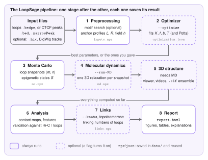

The Pipeline¶
LoopSage turns a list of loops into three-dimensional structures in a few steps. It first reads the data, then samples many possible sets of loops with a Monte Carlo simulation, then relaxes every set into a 3D polymer with molecular dynamics, and finally compares the result with experiments. Each of these steps is a stage. This page shows how the stages follow one another, what each of them hands to the next one, and how to run all of them or just one.

The stages¶
1. Preprocessing. The stage reads the loop file (BEDPE) or the CTCF peaks (BED, narrowPeak) for the chosen region and puts everything on a grid of beads, the simulation units (a bead is a piece of chromatin of a few kb). If you asked for it, it first runs the Motif Finder to find the direction of the CTCF sites. The result is a set of arrays: the anchor profiles \(L\) and \(R\) (how strongly each bead holds a left or right leg of an extruder), the loop map, optional tracks, and an optional compartment field \(h\). If a Hi-C file is given, it is read here too. See Preprocessing.
2. Optimizer (--optimize). A few numbers of the model cannot be measured: the number of extruders, the strength of the folding and the binding, the temperature. The optimizer tries many short simulations and keeps the values whose loops look most like the target (a Hi-C map or the input loops). It passes the chosen values to the next stage. See The Optimizer.
3. Monte Carlo. The core of the model. A set of \(N_{\mathrm{lef}}\) extruders, each one a loop between two beads, is moved at random and the moves are accepted or rejected with an energy rule. The stage saves a snapshot of all loops every few steps. See Monte Carlo.
4. Molecular dynamics (--run-MD). Every Monte Carlo snapshot is turned into a 3D structure: the loops become springs in a bead-spring polymer, which is relaxed with a Langevin simulation in OpenMM. See Molecular Dynamics.
5. 3D structure. It works on the MD frames: interactive viewer, videos, and the ensemble of structures as .cif files. It only runs together with the MD.
6. Analysis. Contact maps are built from the Monte Carlo loops and from the 3D frames, and compared with the input loops and with Hi-C when it is given (correlations, insulation, decay with distance). It also extracts map features such as TAD boundaries.
7. Links (--knots, or a topoisomerase mode). An optional topological analysis of the 3D loops (linking numbers), described in Topology.
8. Report. Everything above is collected in one report.html with the figures, tables and short explanations.
What is passed from stage to stage¶
The stages do not talk to each other directly. They share one run context that holds the results computed so far, and each stage reads what it needs from it:
| Stage | Reads | Produces |
|---|---|---|
| Preprocessing | the input files | \(L\), \(R\), loop map, tracks, field \(h\), the Hi-C map |
| Optimizer | the inputs and the target | the best \(N_{\mathrm{lef}}\), \(f\), \(b\) and temperature (written into the configuration) |
| Monte Carlo | the inputs and the configuration | for every snapshot: the loop positions \((m_i,n_i)\), the epigenetic states, the energy terms |
| Molecular dynamics | the snapshots | for every snapshot: the 3D coordinates of all beads |
| Analysis | all of the above | maps, scores, validation figures |
The Monte Carlo snapshots are the bridge between the model and the 3D structure: the molecular dynamics never sees the energy of the Monte Carlo, only the final loops and states.
Running it¶
A run is described by a configuration file, by command-line options, or by both (an option overrides the file). Every option has a configuration key, see the Reference.
# everything, from a config file
loopsage -c config.ini
# the same with options only
loopsage -f loops.bedpe -r chr1:78000000-92000000 -n 1000 -t 4 --run-MD -o results
# add the optimizer and a Hi-C file
loopsage -f loops.bedpe -r chr1:78000000-92000000 -n 1000 --run-MD --optimize --hic sample.hic
You can also run one stage on its own. The earlier stages are then not recomputed: their saved results are loaded from the latest run folder.
python src/pipeline/stage_mc.py -c config.ini # only the Monte Carlo, inputs are reused
python src/pipeline/stage_md.py -c config.ini # only the MD, the Monte Carlo is reused
Because the Monte Carlo result is saved, you can change only MD options (time step, forces, number of steps per frame) and repeat the MD without sampling the loops again.
The run folder¶
Every run writes its files into its own folder, named after the region and a run number:
results/chr1_78000000_92000000_1/
config_resolved.ini every option used, and where its value came from
data/ saved stage results (inputs.npz, mc.npz, md.npz, ...)
metadata/ maps and matrices as .npy
structures/ init_structure.cif, trajectory.dcd, ensemble/ (one .cif per frame)
visualizations/ all figures (png and svg), the 3D viewer, videos
report/report.html the report
logs/loopsage.log the full log
The file config_resolved.ini is the best record of a run: it contains every option, and for each one whether it was a default, came from the file, from the command line, or was set by the optimizer. With the same file and the same --seed (and --threads 1 for the MD) a run can be repeated exactly.
Where the code is¶
| File | Role |
|---|---|
src/run.py |
entry point: reads the configuration and starts the pipeline |
src/pipeline/runner.py |
the run context and the loop over the stages (compute, or load the saved result, then describe) |
src/pipeline/stage_*.py |
one file per stage; each has enabled, compute, load and describe |
src/knots/stage.py |
the optional links stage |
src/settings/ |
the list of options (schema.py), reading of files and command line, checks |